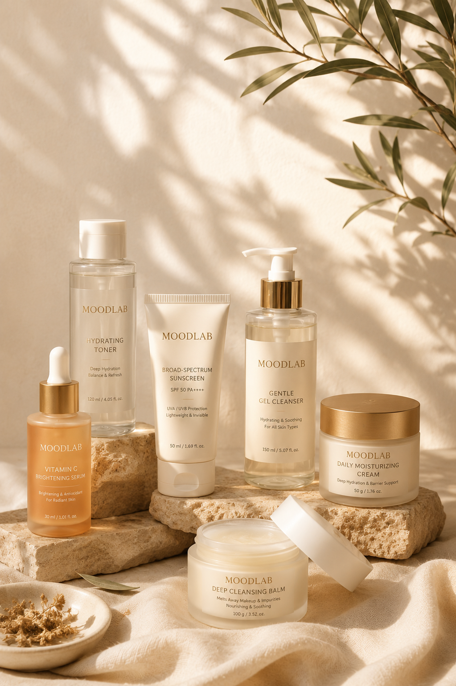

Where science meets sensory luxury.
MOODLAB hadir sebagai interpretasi modern dari ritual kecantikan yang elegan. Kami percaya bahwa kesehatan kulit bukan hanya tentang formula, tetapi juga tentang pengalaman. Karena merawat kulit adalah bentuk penghargaan terhadap diri sendiri.
Setiap produk MOODLAB dirancang dengan presisi ilmiah, tekstur yang lembut, serta aroma yang menenangkan. Perpaduan tersebut menciptakan sensasi perawatan yang bukan hanya memperbaiki kulit, tetapi juga menghadirkan ketenangan dalam rutinitas harian.
MOODLAB terinspirasi dari kekayaan alam Indonesia. Kami bekerja sama dengan petani lokal untuk memperoleh bahan-bahan botani pilihan yang diproses secara bertanggung jawab. Kolaborasi ini tidak hanya memastikan kualitas bahan terbaik, tetapi juga menciptakan rantai produksi yang lebih berkelanjutan.
Melalui kemitraan ini, MOODLAB mendukung pemberdayaan ekonomi petani dengan sistem pembelian yang adil, pelatihan peningkatan kualitas panen, serta peluang kerja yang lebih stabil bagi masyarakat di daerah produksi.
Menjadi brand skincare premium yang menghadirkan harmoni antara kecantikan, kenyamanan, kualitas tinggi, dan kontribusi positif untuk masyarakat.
